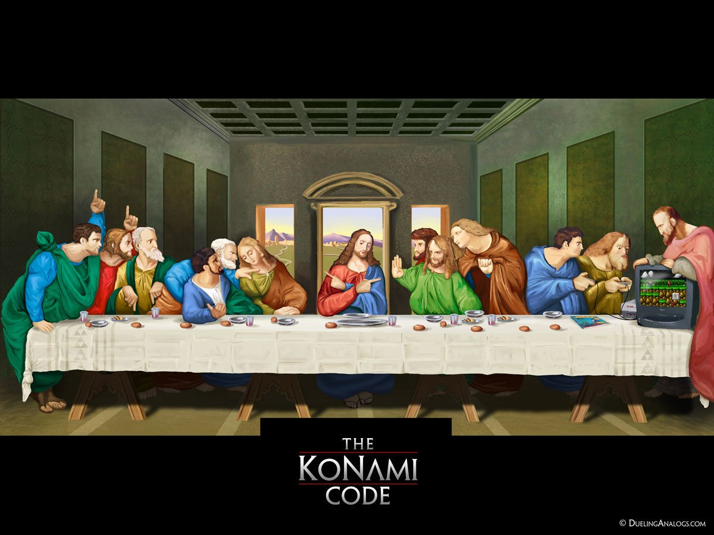

<div class="aboutWrap">
        <section class="section_8bit" ng-if="tc.mainLoad">
                <div class="wrapper wrapMenu nowPlaying">
                        <div class="container">
                                <div class="thanks">
                                        <h1 class="thanksheader">THANKS!</h1>
                                        <span class="thanksheader">Technology used:</span>
                                        <span class="thanks"> postgreSQL, express, angular
                                                <sub>JS</sub>, node.
                                                <sub>js</sub>
                                        </span>
                                        <span class="thanks">CSS
                                                <sub>3</sub>/Html
                                                <sub>5</sub>
                                        </span>
                                        <span class="thanksheader">APIs:</span>
                                        <span class="thanks">IGDB.com & HowLongToBeat.com</span>
                                </div>
                                <div class="thanks codes">
                                        <span ng-repeat="letter in tc.sequence track by $index">
                                                        {{ letter }}
                                        </span><span class="blinking-cursor">_</span>
                                </div>
                        </div>
                </div>

        </section>

        <section class="section_8bit" ng-if="tc.konamiStatus">
                <div class="wrapper wrapMenu nowPlaying">
                                
        </section>


        <div class="thanks codes" ng-if="tc.loading">
                <span>Loading</span>
                <span class="blinking-cursor loading">...</span>
        </div>

        </div>